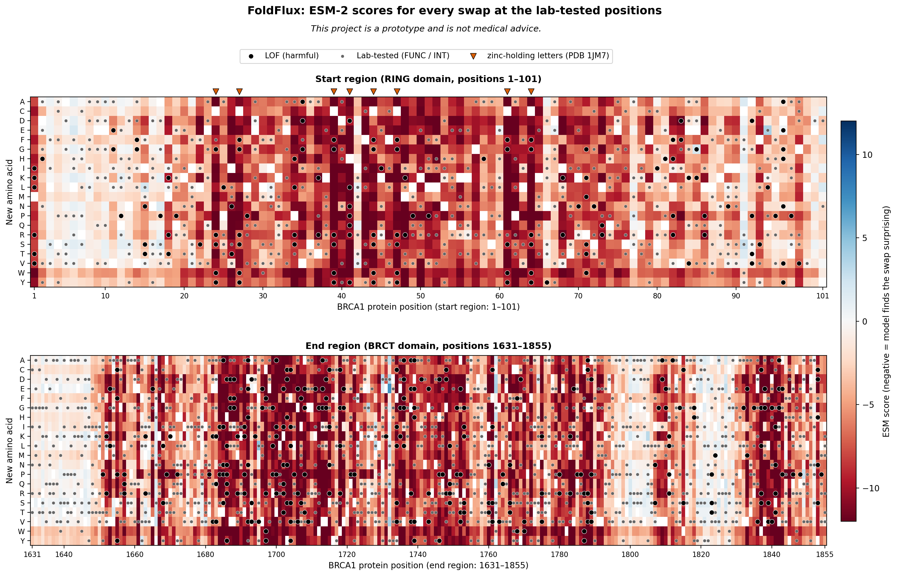

A spellchecker for proteins, graded against the lab.
BRCA1 is written in 1,863 letters, one per amino acid. We asked a protein language model which single-letter changes look like typos, then checked its calls against 1,837 lab measurements.
The first 101 letters of BRCA1. The red underline marks how harmful the model finds changes at each position, on average across all 19 possible swaps. Darker means more harmful, compared with the other positions here. Then C61G: the C at position 61 becomes a G. In the lab C61G scored −1.738, well into broken. The model's score was −10.50.
BRCA1 is our exam, not the use case. It is one of the few genes with a lab answer key, so we can check the model here before anyone trusts this kind of model on a gene without one.
What we can show.
Every number is read from our results files, from the one held-out test unless tagged.
94.4%
of harmful mutations caught, on a part of the protein we kept hidden until one final test.
252 of 267 not cleared as harmless (196 “looks harmful”, 56 “can’t tell”), positions 1631–1855, tested once. It also failed to clear 437 of 899 harmless ones (345 of them “can’t tell”).
96.9%
of the time, when the model said a change looks harmless, the lab agreed.
462 of 477 “looks harmless” calls on the held-out test with a clear lab answer. It made that call for 477 of 1,166 changes; 77% of test changes are harmless. When unsure, it says “can’t tell” instead of guessing.
90%
of the time, shown one harmful and one harmless change, the model ranks the harmful one as worse.
AUROC 0.8995 on the held-out test; 50% would be a coin flip, and ties count as half. A classic substitution table (BLOSUM62) scores 67% on the same measure.
+23 points
ahead of a classic substitution table (BLOSUM62) on that ranking measure, a gap that holds up when we resample the test.
AUROC gain +0.231 on the held-out test; 95% range +0.188 to +0.272 over 1,000 resamples of the 225 end-region positions. The whole range is above zero.
0
lab results the model learned from. It only read natural protein sequences.
Zero-shot: lab answers were used only to set the cutoffs on the start region and to grade the model.
checked after the test
90% vs 92%
close to Google DeepMind’s AlphaMissense, a widely used mutation predictor, just below it, using fewer kinds of data.
AUROC 0.8995 vs 0.9155 on the same held-out rows; the gap (+0.016, 95% range −0.003 to +0.038) includes zero. Our model reads only the protein sequence; AlphaMissense also uses 3D structure and population data. We do not claim to be better.
Four steps, no training.
The model never saw a lab label. It only learned which letters tend to sit where in natural proteins. We borrowed the lab's answers to grade it.
1
Hide one letter
We give ESM-2, a protein language model, a 500-letter stretch of BRCA1 with one position blanked out, and ask how likely each of the 20 amino acids is to belong there.
2
Compare the old and new letter
The score is log P(new) minus log P(old). Below zero means the new letter surprises the model more than the one nature put there. C61G scores −10.50.
3
Draw two lines on the start region
On positions 1–101 we set one line to still catch at least 90% of the 131 harmful mutations, and another to flag at most 10% of the 385 harmless ones. Between the lines the model says it can't tell.
4
Grade once on the end region
Then we froze both lines and scored positions 1631–1855 one time against the lab. The results below are that single run, mistakes included.
Tune on one end. Test on the other, once.
We never split mutations at random. Every cutoff was set at the start of the protein, frozen, and then used one time on the far end.
11,863
Tuned herePositions 1–101, the RING region. 131 harmful and 385 harmless in the lab.
Tested oncePositions 1631–1855, the BRCT region. 267 harmful and 899 harmless in the lab.
To catch 94.4% of harmful mutations, the model also flagged 437 of 899 harmless ones.
That is the held-out end region, scored once. Each dot is one mutation the lab gave a clear answer for.
267 mutations the lab found harmful
252 caught
15 missed
899 mutations the lab found harmless
437 false alarms
462 correctly left alone
A model that only read protein sequences ranked harmful BRCA1 mutations better than a classic substitution table. Its AUROC was 0.899 against 0.668 for BLOSUM62.
Method
Caught of 267
Missed of 267
False alarms of 899
Catch rate
AUROC
Always says harmless
0
267
0
0.0%
0.500
BLOSUM62 rule
232
35
571
86.9%
0.668
ESM-2, our model
252
15
437
94.4%
0.899
ESM-2 plus extras
245
22
405
91.8%
0.866
AUROC ranks how well each method orders harmful above harmless; 0.5 is a coin flip. ESM-2 minus BLOSUM62: +0.231, with a 2.5th to 97.5th percentile range of +0.188 to +0.272 over 1,000 resamples of end-region positions.
Where it fails.
We show our two worst mistakes on purpose. Both are guesses about why, and we did not test them.
DNGFHAS1823IGQMC
A1823S, our worst miss
The lab measured −3.643, well into broken. The model scored it +0.75 and called it "Looks harmless". The BLOSUM62 rule and ESM-2 plus extras missed it too.
Our guess, not tested: the lab edited DNA, not protein. This change may upset how the gene's message is spliced, which a model that only reads protein letters cannot see.
LDSVALP1844YQCQE
L1844P, our worst false alarm
The model scored it −12.93 and called it "Looks harmful". In the lab the protein kept working (score −0.233).
The BLOSUM62 rule and ESM-2 plus extras flagged it too.
Our guess, not tested: a proline swap usually bends a protein out of shape, which is why every method flagged it. But this position varies a lot across related proteins, and here the lab found the protein tolerated the change.
Every swap we scored.

Columns are positions and rows are the 20 possible new letters. Red means the model found the swap surprising, blue means it did not. Black dots mark swaps the lab found broken.
Sources and credits.
Data
Findlay GM et al. (2018), Nature 562:217–222, saturation genome editing of BRCA1. doi
ProteinGym (Notin P et al., 2023), source of the BRCA1 table we used. github
Models and methods
ESM-2 (Lin Z et al., 2023, Science 379:1123–1130), facebook/esm2_t33_650M_UR50D.
Masked-marginal scoring: Meier J et al. (2021), NeurIPS.